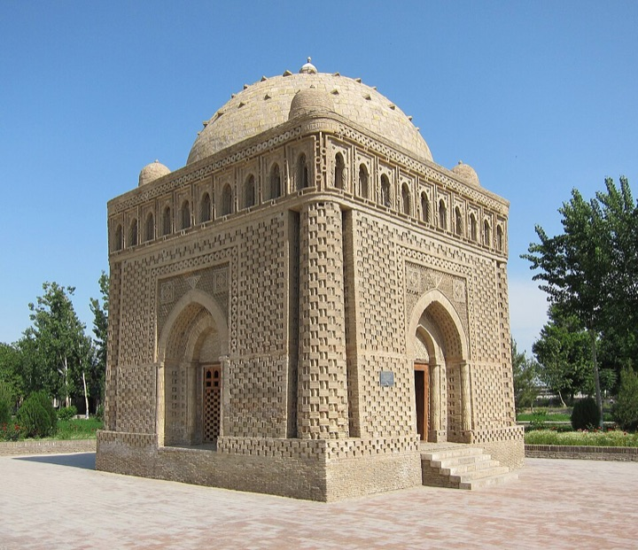

Ориентир
Мавзолей Саманидов
- Построен
- рубеж IX и X веков
- Что это
- усыпальница династии Саманидов
- Координаты
- 39.7770, 64.4004
Фото: Apfel51, Public domain, Wikimedia Commons

Ориентир
Фото: Apfel51, Public domain, Wikimedia Commons